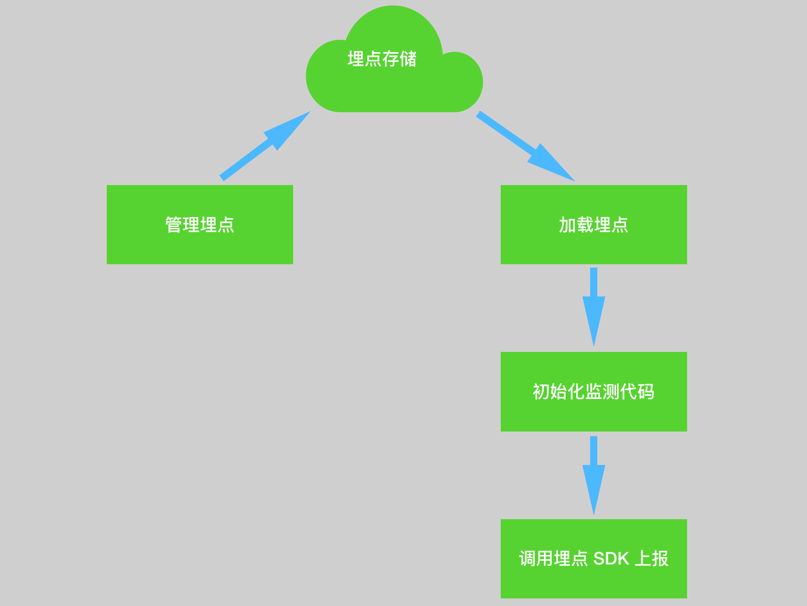

客户端埋点总体可以分为三类：手动埋点，半自动埋点和全自动埋点。
| 类型 | 优点 | 缺点 |
|---|---|---|
| 手动埋点 | 可以进行个性化埋点，满足复杂业务场景 | 1、简单&&重复性工作 <br/>2、沟通成本高，需要开发和产品沟通<br/>3、代码侵入，埋点周期长，依赖版本发布 |
| 半自动埋点 | 1、通用的埋点方式进行整合，提高埋点效率<br/>2、PM或业务运营直接埋点，避免沟通和研发工作量<br/>3、埋点周期缩短，可做到近实时埋点 | 1、可视化埋点一般适用于比较简单的 APP，如果版本过多，或更新频繁，管理起来比较复杂<br/>2、公司自行开发可视化埋点方案成本较高<br/> |
| 全自动埋点 | 1、根本上解决漏埋问题<br/>2、缩短埋点周期 | 1、个性化数据采集无法满足<br/>2、全自动埋点覆盖面广，数据传输储存压力大，许多上传的信息是不需要的<br/>3、PM 还是需要和开发沟通来分析数据 |
三种方案各有优点缺点，有不同的适用场景。需要根据实际使用场景来选择其中一种或多种类型进行埋点。
我建议小型应用适合手动埋点，中大型应用需要半自动埋点+手动埋点，非常注重数据分析和有相关计算存储资源的企业可以选择全自动埋点。
一个事件就是描述了“谁在什么时候在什么地方以某种方式干了什么事情”，具备 Who，When，Where，How，What 五个属性。客户端埋点就是上报发生在客户端的事件。
常用的客户端埋点事件类型如下：
| 类型 | 说明 |
|---|---|
| 访问 | 包括页面访问（PV）<br/>、页面模块曝光（比页面更小颗粒度） |
| 点击 | button、link、卡片类的点击操作 |
| 滑动 | 列表滑动、轮播图滑动、大页面滑动 |
| 停留时长 | 用户关注度、信息密度 |
1、以可视化地工具来管理埋点信息，新增，删除，编辑等
2、不干涉业务代码，无需研发介入
3、动态加载页面埋点配置，实现热部署

事件的五个维度中 Who，When，Where，How 获取方式在同一个应用中一般不会发生变化，可以采用通用的获取方式。
可视化埋点的关键点在于 What。What 的关键点在于：
1、如何标识一个页面，这个比较简单，使用 URL+Params。
2、如何标识一个元素，DOM Attribute && DOM Path。可以适度侵入开发，约定节点特征描述。
此外对于迭代比较频繁或大改版的 Web 应用，很容易造成部分埋点失效。需要在 CI 中集成一个埋点检测的流程，避免无意中使部分埋点失效。
1、扩展现有埋点管理系统，Web埋点增加“可视化”参数。eg：dom attribute，dom path等信息。
2、可视化选点 Chrome 插件。
3、客户端下载配置后初始化埋点代码。